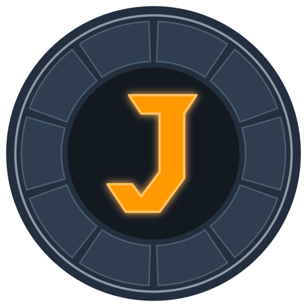

Jarvis — 5 pistes de logo « réacteur ARK × J »
1 · RéacteurFidèle à l'ARK, J orange lumineux
2 · SmileLe crochet du J = flèche Amazon
3 · MinimalPlat, 2 couleurs, docs & print
4 · BadgeAnneau bleu Prime, J blanc

5 · FacettesJ taillé, hérite du triangle